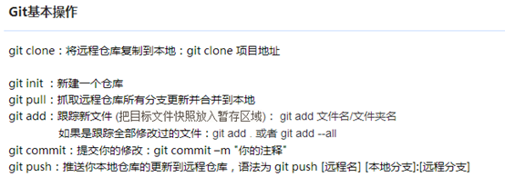

基于github+HEXO的博客网站搭建过程
很多人想要自己的博客，为的是能够自由使用，不管是瞎折腾还是涉及审核话题，都是自己说的算。而选择github+hexo的方式搭建博客，不失为一个很优越的选择。首先，github允许你绑定属于自己的域名；其次，使用github pages你可以得到一个免费的服务器，也省去了自己买服务器、搭建服务器的繁琐了；再者，hexo使用Markdown解析文章，生成静态网页，加载速度还是可以的；还有，这是一个国外的托管网站，你的写作自由是不受限制的。若你熟悉编程语言，github或许是你离不开的一个网站！
一、基础环境
安装node.js
Windows下安装node.js非常简单，仅须到官网下载安装文件并执行即可完成安装。
像我的是Windows 64位，直接下载安装，无脑下一步就行了，不需要配置环境变量。
安装Git
去Git官网根据你的电脑参数，下载对应版本。
下载完成，通过在命令行输入 git version 查看是否安装成功，有输出版本号说明安装成功。
鼠标邮件菜单里就多了Git GUI Here和Git Bash Here两个按钮，一个是图形界面的Git操作，一个是命令行，我们选择Git Bash Here。

Hexo安装
桌面右键鼠标，点击Git Bash Here，输入npm命令即可安装
1 | npm install hexo-cli -g |
第一句是安装hexo，第二句是安装hexo部署到git page的deployer，两个都需要安装。
如下图即安装完成。
二、站点部署
Hexo初始化配置
创建Hexo文件夹
安装完成后，根据自己喜好建立目录（如F:\Blog\Hexo），直接进入F:\Blog\Hexo文件夹下右键鼠标，点击Git Bash Here，进入Git命令框，执行以下操作。
1 | $ hexo init |
安装 Hexo 完成后，Hexo 将会在指定文件夹中新建所需要的文件。
Hexo文件夹下的目录如下：
本地查看效果
执行下面语句，执行完即可登录localhost:4000查看效果
1 | hexo generate |
登录localhost:4000，即可看到本地的效果如下：
部署github pages
那么现在本地的博客已经搭建起来了，但是我们只可以通过本地连接查看我们的博客。那么我们现在需要做的就是把本地的博客发布到服务器上，让别人也可以连接我们的博客，而Github Pages就帮我完成了这件事情。但是Github Pages的代码就是寄存在Github上面的。那么接下来我们需要在Github上面创建一个新的项目。
如果没有账户的话，需要注册一个。有的话就直接新建仓库，往下执行。
注册Github账户
访问Github首页
点击右上角的 Sign Up，注册自己的账户
创建项目代码库
注册完登陆后，我们就创建一个我们自己的Github Pages项目。点击New repository。
创建要点如下：
配置SSH密钥
配置Github的SSH密钥可以让本地git项目与远程的github建立联系，让我们在本地写了代码之后直接通过git操作就可以实现本地代码库与Github代码库同步。操作如下：
第一步、看看是否存在SSH密钥(keys)
首先，我们需要看看是否看看本机是否存在SSH keys,打开Git Bash,并运行:
1
$ cd ~/. ssh
检查你本机用户home目录下是否存在.ssh目录
如果，不存在此目录，则进行第二步操作，否则，你本机已经存在ssh公钥和私钥，可以略过第二步，直接进入第三步操作。
第二步、创建一对新的SSH密钥(keys)
1
2
3
4$ssh-keygen -t rsa -C "your_email@example.com"
\#这将按照你提供的邮箱地址，创建一对密钥
Generating public/private rsa key pair.
Enter file in which to save the key (/c/Users/you/.ssh/id_rsa): [Press enter]直接回车，则将密钥按默认文件进行存储。此时也可以输入特定的文件名，比如/c/Users/you/.ssh/github_rsa
接着，根据提示，你需要输入密码和确认密码（说到这里，如果你很放心，其实可以不用密码，就是到输密码的地方，都直接回车，所以每次push就只管回车就行了。所谓的最安全的密码，就是没有密码 哈哈）。相关提示如下：
1
2Enter passphrase (empty for no passphrase): [Type a passphrase]
Enter same passphrase again: [Type passphrase again]输入完成之后，屏幕会显示如下信息：
1
2
3
4Your identification has been saved in /c/Users/you/.ssh/id_rsa.
Your public key has been saved in /c/Users/you/.ssh/id_rsa.pub.
The key fingerprint is:
01:0f:f4:3b:ca:85:d6:17:a1:7d:f0:68:9d:f0:a2:db your_email@example.com第三步、在GitHub账户中添加你的公钥
运行如下命令，将公钥的内容复制到系统粘贴板(clipboard)中。
1
clip < ~/.ssh/id_rsa.pub
接着：
- 登陆GitHub,进入你的Account Settings.
- 选择SSH Keys

- 粘贴密钥，添加即可
测试
可以输入下面的命令，看看设置是否成功，git@github.com的部分不要修改：
1 | $ ssh -T git@github.com |
如果是下面的反馈：
1 | The authenticity of host 'github.com (207.97.227.239)' can't be established. |
不要紧张，输入yes就好，然后会看到：
第四步、设置用户信息
现在你已经可以通过SSH链接到GitHub了，还有一些个人信息需要完善的。
Git会根据用户的名字和邮箱来记录提交。GitHub也是用这些信息来做权限的处理，输入下面的代码进行个人信息的设置，把名称和邮箱替换成你自己的，名字根据自己的喜好自己取，而不是GitHub的昵称。
1 | $ git config --global user.name "ryanlijianchang"//用户名 |
第五步、SSH Key配置成功
本机已成功连接到github。
部署到github
将本地的Hexo文件更新到Github的库中
- 第一步、登录Github打开自己的项目 username.github.io

- 第二步、打开之后，点击SSH，选择SSH类型地址
- 第三步、复制地址
- 第四步、打开你一开始创建的Hexo文件夹（如F:\Blog\Hexo），用记事本打开刚文件夹下的_config.yml文件

- 第五步、在配置文件里作如下修改，保存
- 第六步、在Hexo文件夹下执行：
1 | hexo g |
或者直接执行
1 | hexo g -d |
执行完之后会让你输入github的账号和密码，输入完后就可以登录我们自己的部署在Github Pages服务器上的博客了。对应的地址是 username.github.io(我的是：xxx.github.io)。
假如这时候，报错
ERROR Deployer not found: git，那么就是你的deployer没有安装成功，你需要执行如下命令再安装一次：
1 | npm install hexo-deployer-git --save |
这样，你再执行hexo g -d，你的博客就部署到Github上了。
浏览主页地址
在浏览器上输入Github Pager为我们生成的外链（例如我的是：xxx.github.io/，而你的只需要把你的github用户名替换掉这个链接中的xxx，因为我的用户名是这个，那么你自己的专属博客地址就是：https://[您的用户名].github.io/）即可看到自己的博客了。
当然，每一个人都可以通过这个地址访问到你的博客了。